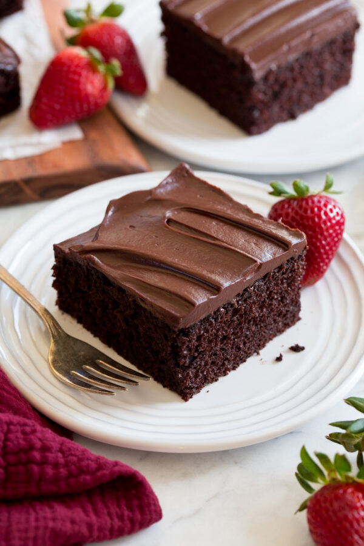

Chocolate Cake

Description
This recipe has streamlined the process and the prep couldn't be faster,
and yet you still end up with one of the best chocolate cakes you'll
taste.
It's perfectly chocolatey with rich depth, it has a heavenly texture
with a fluffy crumb, and the fudgy decadent ganache frosting is the
crowning finish.
Of course it's perfect for birthdays and holidays but with its
simplicity it also makes an amazing weekend treat.It will be savored
down to the last crumb!
Ingedients
- 1 cup (142g) all-purpose flour (scoop and level to measure)
- 1 cup (200g) granulated sugar
- 6 Tbsp (35g) Dutch process cocoa powder, plus more for dusting pan
- 1/2 tsp baking soda
- 1/2 tsp salt
- 1 cup buttermilk
- 1/2 cup vegetable oil or canola oil
- 2 tsp vanilla extract
- 2 large eggs
- 6 oz. semi-sweet chocolate, finely chopped
- 3/4 cup heavy cream
Steps
- Preheat oven to 350 degrees
- Prepare pan: Spray a 9 by 9 or 8 by 8-inch
baking dish with non-stick cooking spray then
dust with a little cocoa. Shake out excess cocoa
- Whisk dry ingredients: In a large mixing bowl
whisk together flour, sugar, cocoa powder, baking
soda, and salt
- Mix in wet ingredients: Add buttermilk, oil, vanilla
and eggs. Whisk mixture until very well blended
(about 1 minute)
- Pour batter into prepared baking dish
- Bake in preheated oven until toothpick inserted into
the center of cake comes out clean, about 27 to 35
minutes
- Let cool completely on a wire rack
How to Make Chocolate Ganache Frosting
- While cake cools make ganache
- Place finely chopped chocolate in a medium heat-proof
mixing bowl
- Heat heavy cream in a small saucepan over stovetop on
medium heat until just simmering
- Pour hot cream over chocolate then stir with a rubber
spatula until melted and smooth
- Let it cool until it's a thicker consistency, about 30
minutes, then spread ganache over cake and slice